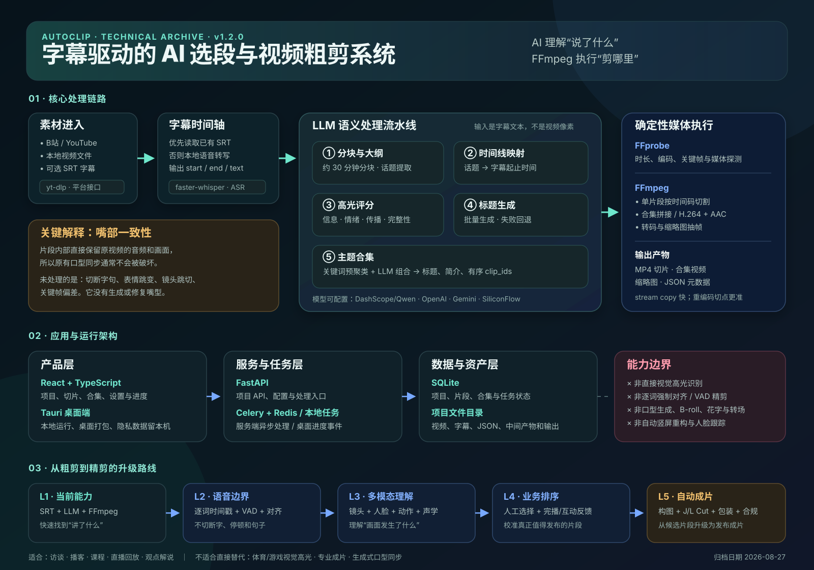

{kind=link}
降低内容筛选成本
先让模型阅读字幕，再定位需要人工查看的时间段，特别适合访谈、课程、播客和直播回放。
AutoClip 把长视频转换成带时间戳的文字，由大语言模型完成话题理解、片段选择、评分、标题和分组，再让 FFmpeg 按时间码执行粗剪。
核心桥梁是带时间戳字幕：上游把视频变成文本，下游把模型选出的文本区间重新映射回视频时间轴。应用层负责组织任务，媒体层负责确定性输出。

点击图片可查看 SVG 原图。该图同时作为后续类似需求的快速回顾入口。
它没有发明新的音视频基础模型，而是把“看完长视频、找段落、命名、分组、切文件”变成一条可重复运行的产品流水线。
先让模型阅读字幕，再定位需要人工查看的时间段，特别适合访谈、课程、播客和直播回放。
LLM 负责语义判断；时间校验、文件管理和 FFmpeg 媒体操作由程序负责，结果更可控。
以后可以在同一中间表示上增加逐词对齐、音频事件、镜头理解、智能构图和运营反馈。
每一步都产生结构化中间结果，允许失败重跑、人工检查和局部替换，而不必反复处理完整视频。
通过 yt-dlp、B站接口或本地上传获得视频、字幕和元数据。
优先使用已有 SRT；没有字幕时由 faster-whisper 本地转写。
长字幕按约 30 分钟拆分，让 LLM 提取话题和子话题后再合并。
把话题映射回字幕的起止时间，并由程序限制在合法时间范围。
按信息价值、情绪、传播性和结构完整性评分，默认保留高分候选。
批量生成片段标题；模型失败时回退到原始话题名称。
关键词先分组，LLM 再组织合集，并输出有序片段 ID。
FFmpeg 切片、拼接、转码和抽帧，输出 MP4、缩略图与 JSON。
AutoClip 选择的是“文字上值得传播的内容”。体育得分、游戏击杀、舞蹈动作和人物表情等主要由画面承载的高光，不在当前核心能力内。
片段内部直接保留原视频的音频和画面，因此原有口型通常仍然同步；系统没有生成或修复嘴型。未解决的是片段边界可能切断字句、表情或动作，以及 stream copy 受关键帧影响带来的切点偏差。口型同步与剪辑连续性是两件不同的事。
质量提升应先解决语音和镜头边界，再增加多模态理解；生成式口型修复成本高、风险大，通常不是第一优先级。
把它当作访谈、课程、播客类内容的语义粗剪参考实现和 MVP 起点；保留人工复核，并优先补齐逐词切点、镜头边界和反馈数据闭环。不要把它直接定义为多模态高光或专业自动成片系统。
当出现长内容拆短内容、字幕驱动剪辑、桌面本地处理、服务端批处理或剪辑评分闭环需求时，先回看此归档，再检查上游版本变化。